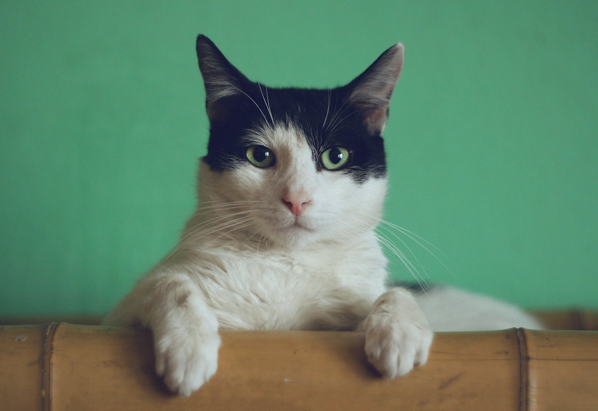
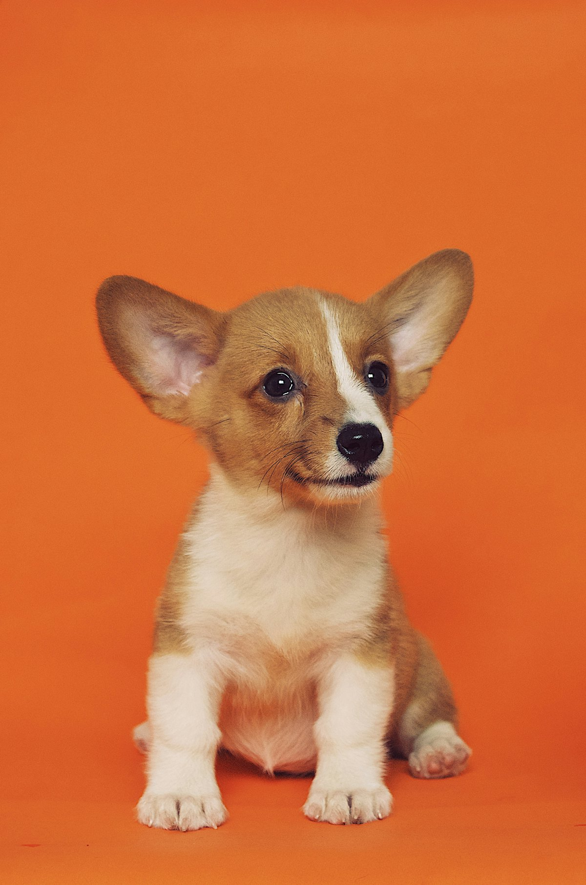
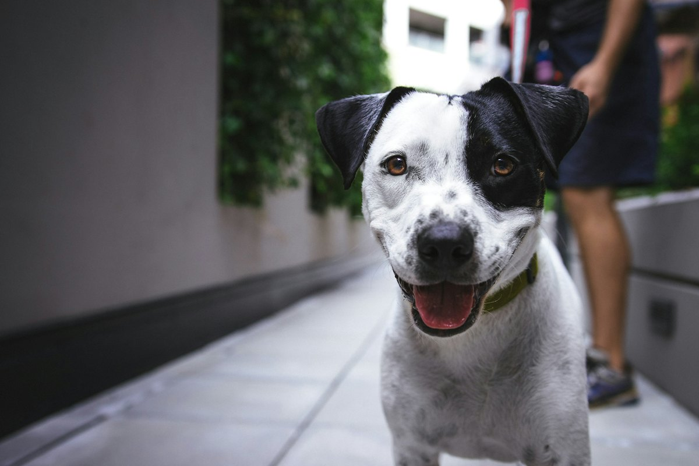
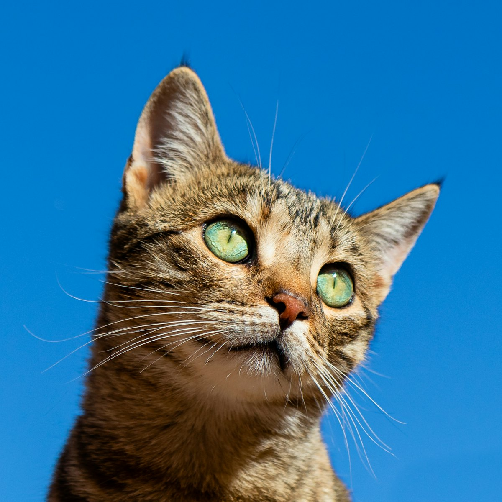
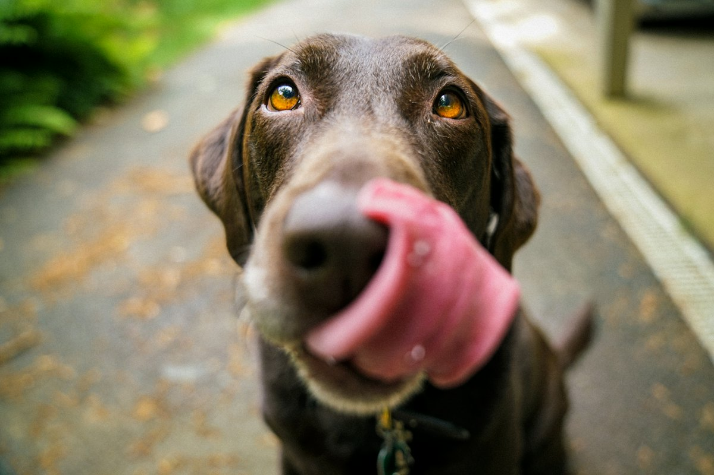

1.284 pessoas ativas perto de você
Uma rede inteira procurando com você.
O que aconteceu? Toque e publique em menos de 2 minutos. Grátis, sempre.
Alertas perto de você agora
Ver todos-
Thor · Beagle
-

Gato frajola, sem coleira
-

Paçoca · Corgi filhote
-

Cão branco e preto, coleira azul
-

Mimi · Gata tigrada
-

Cão marrom, porte grande
Rápido de verdade
Publicar alerta em 3 passos
Sem formulário longo. A MEL monta o cartaz, avisa quem está perto e protege seu contato.
Contato protegido
Conversas pela MEL. Seu telefone só aparece se você quiser.
Local aproximado
O mapa mostra a região (250 m), nunca o endereço exato.
Gratuito e comunitário
Sem anúncios, sem venda de animais. Feito por e para a vizinhança.